Readable export of my Spring 2024 assignment. The text and embedded outputs are retained from the original submission. The portfolio overview provides a concise explanation of the methods and skills.
Homework 2: Measurement & Evaluation of HCC Systems (HCC 6400)
Raphael Maris Ugboko
February 24, 2024.
Question 1. Plotting
Input:
ggplot(tw,aes(inspectability,understandability))+
stat_summary(fun=mean,geom = "bar",fill="white",color="black")+
stat_summary(fun.data = mean_cl_normal,geom = "errorbar",width=0.2)
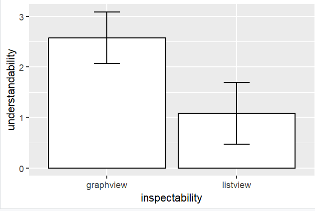
Saved figure or output 1 · original Homework 2 submission. Select the image to inspect it at full size.It looks like the effect is not significant because the confidence intervals (error bars) do not overlap.
Input:
ggplot(tw,aes(inspectability,understandability))+
stat_summary(fun=mean,geom = "bar",fill="white",color="black")+
stat_summary(fun.data = mean_cl_normal,geom = "errorbar",width=0.2)+
facet_wrap(~control)
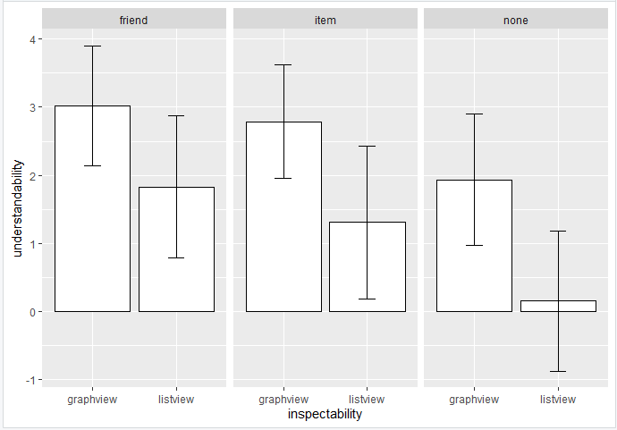
Saved figure or output 2 · original Homework 2 submission. Select the image to inspect it at full size.Non-parallel lines indicate a significant interaction effect.
For None, the confidence intervals overlap slightly so understandability has a moderately significant interaction effect on inspectability for None control manipulation.
In the case of Friend, the confidence intervals cross overlap greater than in None, so understandability has a fairly larger interaction effect on inspectability for Friend control manipulation.
In the case of Item, the confidence intervals overlap, so Understandability has a significant interaction effect on inspectability for Item control manipulation. (pg 522..DSR)
Input:
line <- ggplot(tw,aes(control,perceived_control))
line + stat_summary(fun.y = mean, geom = "point") +
stat_summary(fun.y = mean, geom = "line", aes(group=1),
color = "blue", linetype = "dashed") +
stat_summary(fun.data = mean_cl_boot, geom = "errorbar", width = 0.2)
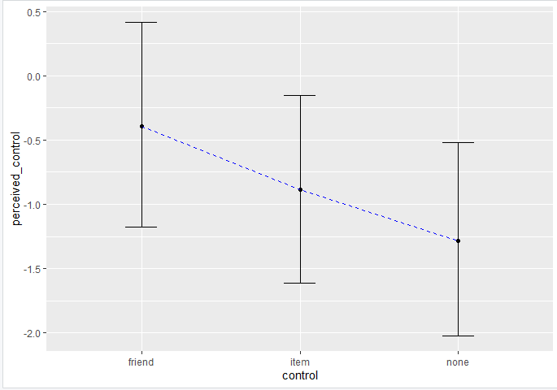
Saved figure or output 3 · original Homework 2 submission. Select the image to inspect it at full size.The effect will be significant because the confidence intervals overlap.
Input:
line <- ggplot(tw, aes(x = control, y = perceived_control, color = inspectability))
line + stat_summary(fun = mean, geom = "point") +
stat_summary(fun = mean, geom = "line", aes(group = inspectability)) +
stat_summary(fun.data = mean_cl_normal, geom = "errorbar", width = 0.2) +
labs(x = "Control", y = "Mean Perceived Control")
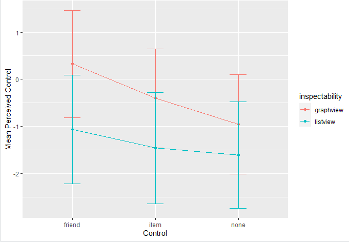
Saved figure or output 4 · original Homework 2 submission. Select the image to inspect it at full size.It looks like there is an interaction effect, because the confidence intervals overlap.
Question 2. T-test
Input:
sample_size <- table(tw$inspectability)
print(sample_size)
graphview = 136
listview = 131
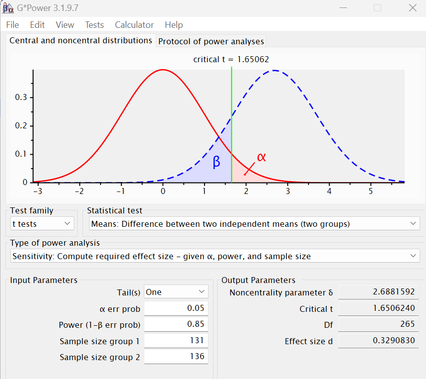
Saved figure or output 5 · original Homework 2 submission. Select the image to inspect it at full size.The smallest effect size is 0.33.
Input:
by(tw$understandability, tw$inspectability, stat.desc, basic = F, norm = T)
varG <- 9.05
varL <- 12.49
d <- .33
difference <- d*(sqrt((varG + varL)/2))
print(difference)
The smallest difference between graphview and listview that we can detect is 1.08.
Input:
by(tw$understandability, tw$inspectability, stat.desc, basic = F, norm = T)
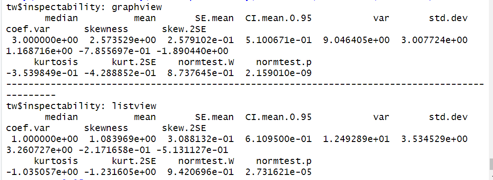
Saved figure or output 6 · original Homework 2 submission. Select the image to inspect it at full size.ggplot(tw, aes(x = understandability, fill = inspectability)) +
geom_histogram(position = "dodge", binwidth = 1, color = "black") +
stat_function(fun = dnorm, args = list(mean = mean(tw$understandability),
sd = sd(tw$understandability)),
color = "red", size = 1) +
labs(title = "Understandability by Inspectability",
x = "Understandability", y = "Inspectability", fill = "Inspectability") +
facet_wrap(~inspectability, ncol = 2)
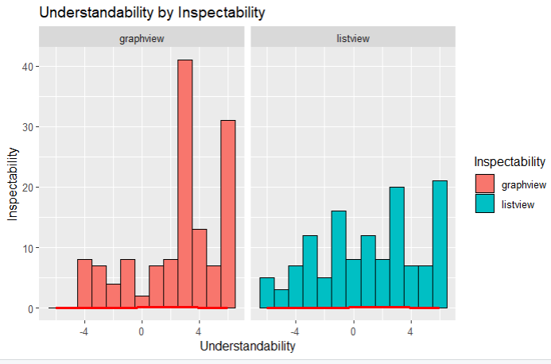
Saved figure or output 7 · original Homework 2 submission. Select the image to inspect it at full size.These values are probably cause for concern.
The Graphview group had a mean understandability of 2.57 with a standard deviation of 3.0. The Standard Error is 0.184 (SE = 3/sqrt(267)).
The Listview group had a mean understandability of 1.08 with a standard deviation of 3.535. The Standard Error is 0.216 (SE = 3.535/sqrt(267)). Also, both normality tests are significant (p = 2.159e-09 for the Graphview group and p =2.732e-05 for the Listview group) implying that we can probably assume non-normality of errors in the model. (pg 379)
We are not testing for heteroscedasticity because the T-test assumes equal variance between groups. Also, if the scenario of unequal variance arises, we can conduct the robust Welch's test which uses a correction that adjusts the degrees of freedom based on the homogeneity of variance.
Input:
tw$inspectability <- factor(tw$inspectability, levels = c("graphview", "listview"))
levels(tw$inspectability)
t.test(understandability ~ inspectability, data = tw, alternative = "greater")
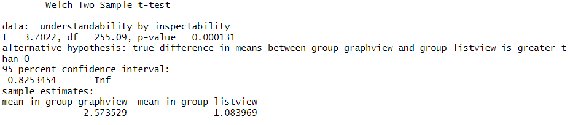
Saved figure or output 8 · original Homework 2 submission. Select the image to inspect it at full size.On average, participants experienced greater understandability from the graph view (M = 2.57, SE = 0.184) than from the list view (M = 1.08, SE = 0.216). The difference in understandability between the graph view and the list view was significant t(255.09) = 3.70, p < .01; however, it did represent a small to medium-sized effect r = 0.226. The t-value of 3.7022 indicates a significant difference between the means of the 'graphview' and 'listview' groups. The 95% confidence interval for the difference in means (0.6972146, 2.2819053) indicates that we are 95% confident that the true difference in means between the 'graphview' and 'listview' groups falls within this range.
Overall, these results suggest that presenting information in a graph rather than a list can lead to significantly higher levels of understandability among participants, with a small to medium effect size.
Input:
WRS2::yuenbt(understandability ~ inspectability, data = tw, nboot = 10000, tr=0)
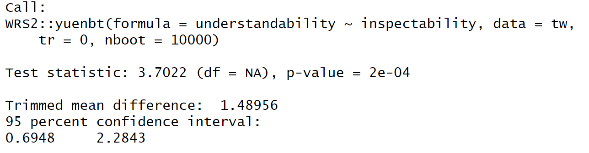
Saved figure or output 9 · original Homework 2 submission. Select the image to inspect it at full size.Input:
WRS2::yuenbt(understandability ~ inspectability, data = tw, nboot = 10000)
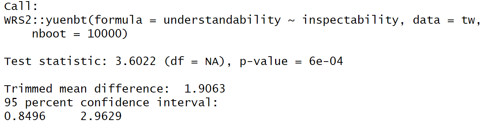
Saved figure or output 10 · original Homework 2 submission. Select the image to inspect it at full size.Input:
WRS2::pb2gen(understandability ~ inspectability, data = tw, boot = 10000)
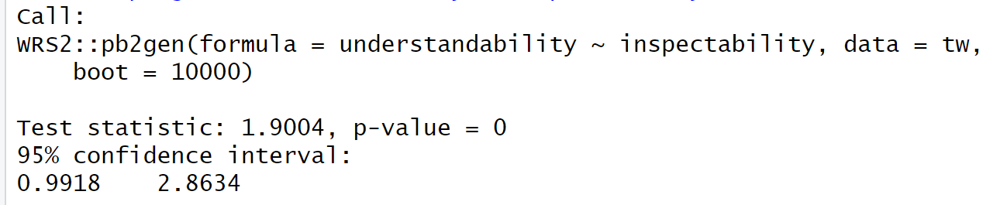
Saved figure or output 11 · original Homework 2 submission. Select the image to inspect it at full size.Model | yuenbt() No trimming | yuenbt() 20% trimming | M-estimators |
$ci | $ci | $ci | $ci |
0.697, 2.282 | 0.695, 2.284 | 0.849, 2.963 | 0.99, 2.86 |
| $test.stat | $test.stat | $p.value |
$p.value | 3.7022 | 3.602 | NA |
2.62E-04 | $p.value | $p.value | |
| 2.00E-04 | 6.00E-04 | |
Bootstrapping did not change the model while Trimming did change the model.
In my opinion, 20% being a good amount is relative because while it provides a more robust estimate of central tendency by removing outliers by excluding the highest 20% and lowest 20% of the values, what about when the confidence interval is increased by the 20% trimming?
Input:
tTest <- 3.7022
tTest_squared = tTest^2
df <- 255.09
r <- sqrt(tTest_squared/(tTest_squared+df))
r
The effect size r is 0.226.
var <- tTest_squared/(tTest_squared+df)
var
The amount of variance in understandability that is explained by the inspectability manipulation is 5.1%.
On average, participants experienced greater understandability from the graph view (M = 2.57, SE = 0.184) than from the list view (M = 1.08, SE = 0.216). This difference was significant t(255.09) = 3.70, p < .01; however, it did represent a small to medium-sized effect r = 0.226.
Robust tests were conducted to compare the means from the two independent groups, namely bootstrapping with no trimming, bootstrapping with 20% trimming and bootstrapping with M-estimators. Bootstrapping did not change the model, while Trimming did change the model by altering the way the mean difference is computed. Trimming removed 20% of outliers from each group before calculating the mean difference. In this case, the trimmed mean difference and associated confidence intervals differ slightly from the untrimmed results, reflecting the impact of outliers on the estimation.
Question 3. ANOVA
Input:
by(tw$perceived_control, tw$control, stat.desc, basic = F, norm = T)
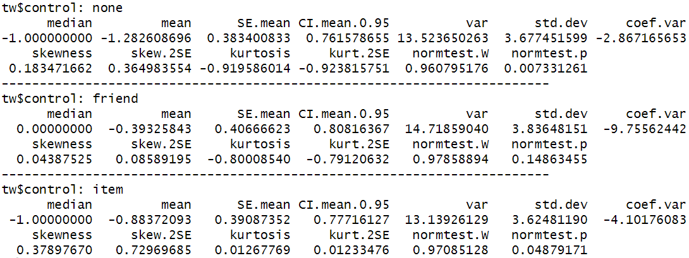
Saved figure or output 12 · original Homework 2 submission. Select the image to inspect it at full size.ggplot(tw, aes(x = perceived_control, fill = control)) +
geom_histogram(position = "dodge", binwidth = 1, color = "black") +
stat_function(fun = dnorm, args = list(mean = mean(tw$perceived_control),
sd = sd(tw$perceived_control)),
color = "red", size = 1) +
labs(title = "Perceived control by control",
x = "Perceived Control", y = "Control", fill = "Control") +
facet_wrap(~control, scales = "free")
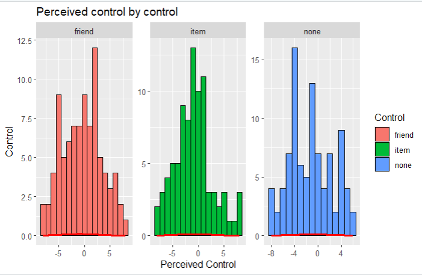
Saved figure or output 13 · original Homework 2 submission. Select the image to inspect it at full size.These values are not cause for concern.
The none control manipulation had a mean perceived control of -1.28, suggesting that, on average, the perceived control tends to be low in the none-condition, with a standard deviation of 3.68. The Standard Error is 0.225. The normality test is non-significant (p = .007).
The friend control manipulation had a mean perceived control of -0.393 suggesting that on average, the perceived control tends to be low in the friend condition, with a standard deviation of 3.84. The Standard Error is 0.235. The normality test is non-significant (p = .148).
The item control manipulation had a mean perceived control of -0.884 suggesting that on average, the perceived control tends to be low in the item condition, with a standard deviation of 3.63. The Standard Error is 0.222. The normality test is significant (p = .048).
Input:
ggplot(tw,aes(control,perceived_control))+geom_boxplot()
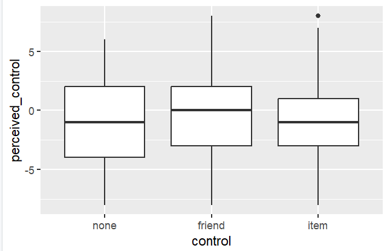
Saved figure or output 14 · original Homework 2 submission. Select the image to inspect it at full size.The spread between the boxplots is not significantly different so we can assume homogeneity of variances/
leveneTest(perceived_control ~ control, data = tw, center = mean)
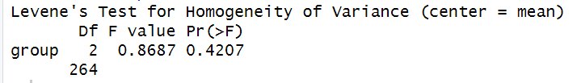
Saved figure or output 15 · original Homework 2 submission. Select the image to inspect it at full size.The Levene’s test Pr(>F) value is 0.42. This is > .05 so we can equally assume homogeneity of variances.
perceivedControl <- var(tw$perceived_control)
friendControl <- var(tw$perceived_control[tw$control == "friend"])
itemControl <- var(tw$perceived_control[tw$control == "item"])
noneControl <- var(tw$perceived_control[tw$control == "none"])
largest_variance <- max(friendControl, itemControl, noneControl)
smallest_variance <- min(friendControl, itemControl, noneControl)
Fmax <- largest_variance / smallest_variance
Fmax
The variance ratio Fmax is 1.12. Using the critical values chart for Fmax (Andy Field pg 189), the value should be below 2 or 3. Thus, our Fmax indicates homogeneity of variances.
Overall, we can conclude that there is no heteroscedasticity.
Input:
none_v_any <- c(1/3,1/3,-2/3)
item_v_friend <- c(0, 1/2, -1/2)
contrasts_matrix <- cbind(none_v_any, item_v_friend)
contrasts(tw$control) <- contrasts_matrix
(pg 419)
Yes they are orthogonal contrasts because they sum up to zero.
Input:
modelAOV <- aov(perceived_control ~ control, data = tw)
summary(modelAOV)
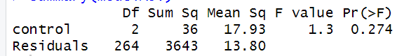
Saved figure or output 16 · original Homework 2 submission. Select the image to inspect it at full size.The p-value is > .05, so the overall effect is non-significant.
Input:
modelLM <- lm(perceived_control ~ control, data = tw)
summary.lm(modelLM)
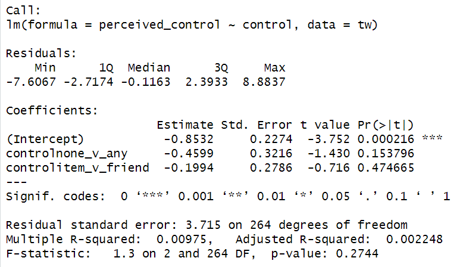
Saved figure or output 17 · original Homework 2 submission. Select the image to inspect it at full size.The first hypothesis related to the contrast control none_v_any is one sided, the p-value is 0.077 (0.154/2). This p-value suggests that there is no significant difference in perceived control between the "none" condition and the combined "item" and "friend" control conditions.
The hypothesis related to the contrast control item_v_friend, is two sided and the p-value is 0.475. This p-value suggests that there is also no significant difference in perceived control between the "item" and "friend" control conditions.
Overall, neither hypothesis is significant. Therefore, we do not have sufficient evidence to conclude that either form of control significantly affects perceived control in comparison to the "none" condition or that there is a significant difference between item control and friend control.
Input:
oneway.test(perceived_control ~ control, data = tw)
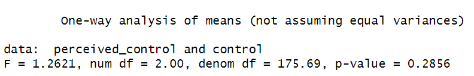
Saved figure or output 18 · original Homework 2 submission. Select the image to inspect it at full size.The results are not much different. It doesn’t surprise me because the assumptions for both are different. Where Welch's test assumes heteroscedasticity i.e. the possibility of unequal variances between groups, the regular ANOVA assumes equal variances. And we already checked for heteroscedasticity earlier with our boxplot, Levene’s test and variance ratio.
Input:
post <- glht(modelAOV, linfct=mcp(control = "Tukey"))
summary(post)
confint(post)
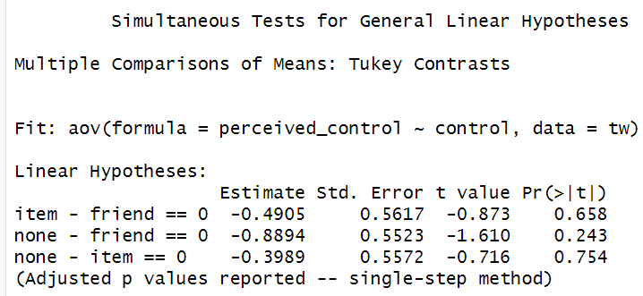
Saved figure or output 19 · original Homework 2 submission. Select the image to inspect it at full size.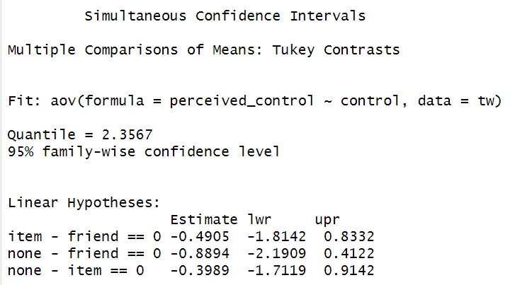
Saved figure or output 20 · original Homework 2 submission. Select the image to inspect it at full size.The output gives the differences in perceived control between the specified pairs of levels of the "control" factor. The simultaneous confidence intervals provide a range of possible values in which the true differences in perceived control between the different control conditions lie.
Item v friend
The estimate is -0.4905 with a standard error of 0.5617 and a t-value of -0.873. The difference in perceived control between the "item" and "friend" conditions is not significant (p = .658).
None v friend
The estimate is -0.8894 with a standard error of 0.5523 and a t-value of -1.610. The difference in perceived control between the "none" and "friend" conditions is also not significant (p = .243).
None v item
The estimate is -0.3989 with a standard error of 0.5572 and a t-value of -0.716. The difference in perceived control between the "none" and "item" conditions is not significant (p = .754).
Input:
rSquared <- 36 / (36 + 3643)
r <- sqrt(rSquared)
r
omega_squared <- (36 - 2 * 13.8) / (36 + 3643 + 2 * 13.8)
omega_squared
The effect r = .099 and omega = .0476.
Input:
contrast1 <- -0.4599 / sqrt((-0.4599)^2 + 2 * (0.3216)^2)
contrast1
contrast2 <- -0.1994 / sqrt((-0.1994)^2 + 2 * (0.2786)^2)
contrast2
The effect size for “none_v_any” is -0.711 and that for “item_v_friend” is -0.452.
Input:
meanDiff <- -0.4599 + 0.1994
sdDiff <- sqrt((3.715^2 + 3.715^2) / 2)
d <- meanDiff / sdDiff
d
the effect size d of the difference between the “none” and “friend” condition is -0.0701.
Omnibus test
There was a non-significant effect of perceived control on levels of control, F(2,264) = 1.3, p = .274, ω = .048
Planned contrasts:
Planned contrasts revealed that any control manipulation did not significantly increase perceived control compared to none (t(264) = .322, p one-tailed = .0769, r = .0198 ) and that friend control is not significantly more effective than item control ( t(264) = .279, p one-tailed = .237, r = . 0172).
Post hoc tests:
pairwise.t.test(tw$perceived_control, tw$control, p.adjust.method = "bonferroni")
Bonferroni tests revealed non-significant differences in perceived control between none and friend conditions, p = .33 and between item and none, p = 1.00.
Tukey post hoc test results and simultaneous confidence intervals revealed that, there is no significant difference in perceived control between item and friend (estimate = -.491p - .658, SE = .562), none and friend ( p = .243) and none and item (p = .754).
omega <- 0.048
f <- sqrt(omega^2 / (1 - omega^2))
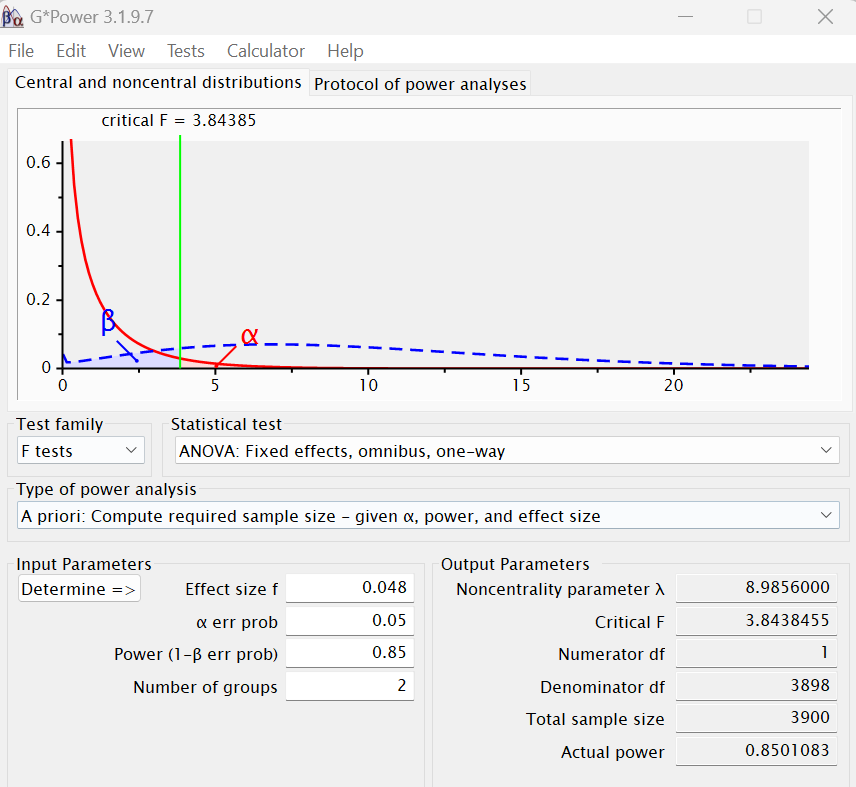
Saved figure or output 21 · original Homework 2 submission. Select the image to inspect it at full size.To get the current ANOVA effect significant at alpha = .05 with 85% power, we would need 3900 participants.
Question 4. Factorial ANOVA
Input:
levels(tw$inspectability) <- c("listview", "graphview")
levels(tw$inspectability)
none_v_any <- c(-1, 1/2, 1/2)
item_v_friend <- c(0, -1, 1)
tw$inspectability <- factor(tw$inspectability)
contrasts(tw$inspectability)<-c(-1/2, 1/2)
Input:
u1 <- aov(understandability ~ inspectability*control, data = tw)
Anova(u1, type=2)
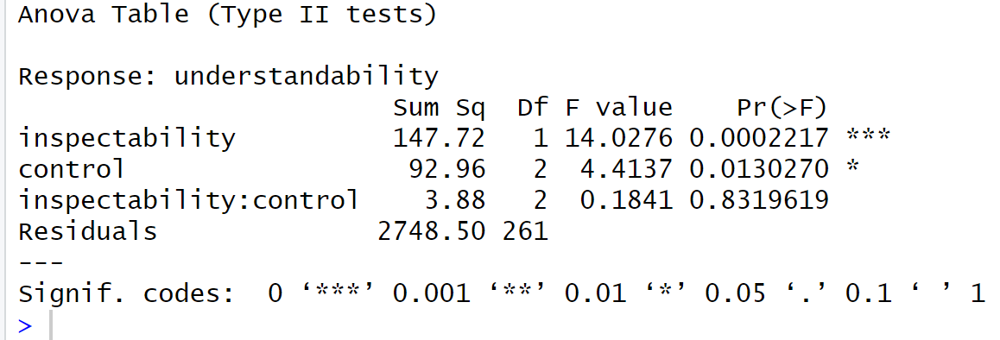
Saved figure or output 22 · original Homework 2 submission. Select the image to inspect it at full size.The main effect of inspectability is significant (p < 0.001, F(1,261) = 14.028) suggesting that there is a a significant difference in understandability scores across different levels of inspectability.
The main effect of control is also significant (p = 0.013, F(2,261) = 4.414), suggesting that there is a significant difference in understandability scores across different levels of control.
The interaction effect between inspectability and control is not significant (p = 0.832, F(2,261) = 0.184), suggesting that the effect of inspectability on understandability does not depend on the levels of control, and vice versa.
Overall, both inspectability and control have significant main effects on understandability, However, there is no significant interaction effect between inspectability and control,
Input:
WRS2::t2way(understandability ~ inspectability*control, data=tw, tr=0.2)
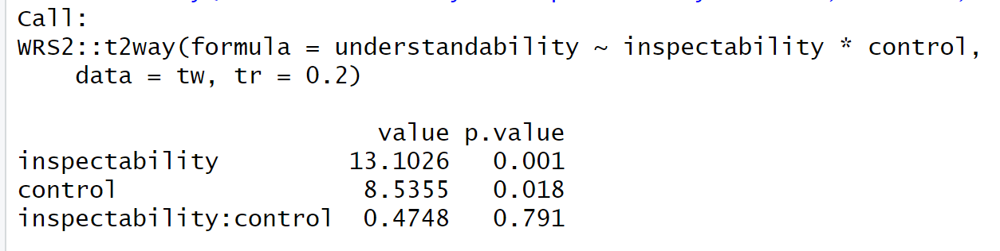
Saved figure or output 23 · original Homework 2 submission. Select the image to inspect it at full size.The results are similar.
Input:
u2 <- aov(understandability ~ inspectability+control, data = tw)
Anova(u2, type=2)
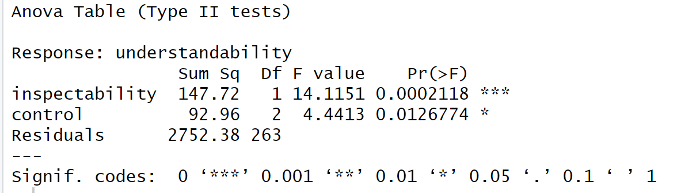
Saved figure or output 24 · original Homework 2 submission. Select the image to inspect it at full size.No they didn’t. Because Type two anova does not contain interaction in the main effect.
Input:
Summary.lm(u2)
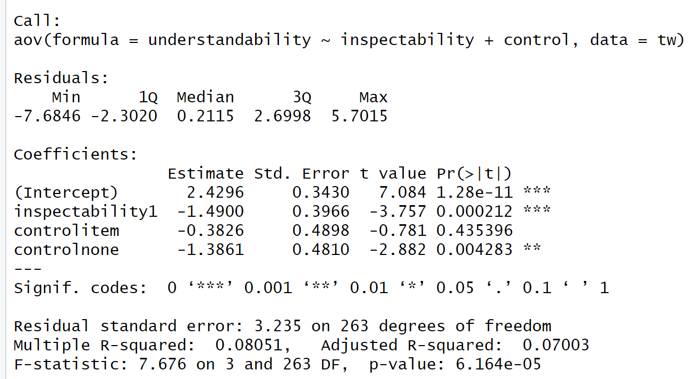
Saved figure or output 25 · original Homework 2 submission. Select the image to inspect it at full size.The contrast for inspectability has two levels: listview and graphview. The estimate for inspectability1 is -1.49 (p < .001, t(263) = -3.78). This suggests that any list or graph increases the understandability significantly. It also compares the difference in understandability between listview and graphview. A negative estimate suggests that, on average, graphview is associated with lower understandability scores compared to listview.
The contrast for control has two levels: item and none. The estimate for the item control is -0.38 and is not significant (p = 0.43, t(263) = -.78). The estimate for no control is -1.39 and is significant (p = .004, t(263) = -2.88). These contrasts compare the difference in understandability between the levels of control. The negative estimate in no control suggests that no control is associated with lower understandability compared to item.
Input:
tw$simple <- interaction(tw$control, tw$inspectability)
inspectability_graph <- c(-2/3,1/3,1/3,-2/3,1/3,1/3)
inspectability_list <- c(0, -1/2, 1/2, 0, -1/2, 1/2)
control_none <- c(-1/2, 0, 0, 1/2, 0, 0)
control_friend <- c(0, -1/2, 0, 0, 1/2, 0)
control_item <- c(0, 0, -1/2, 0, 0, 1/2)
contrasts(tw$simple) <- cbind(inspectability_graph, inspectability_list,
control_none, control_friend, control_item)
simpleg <- aov(understandability ~ simple, data = tw)
summary.lm(simpleg)
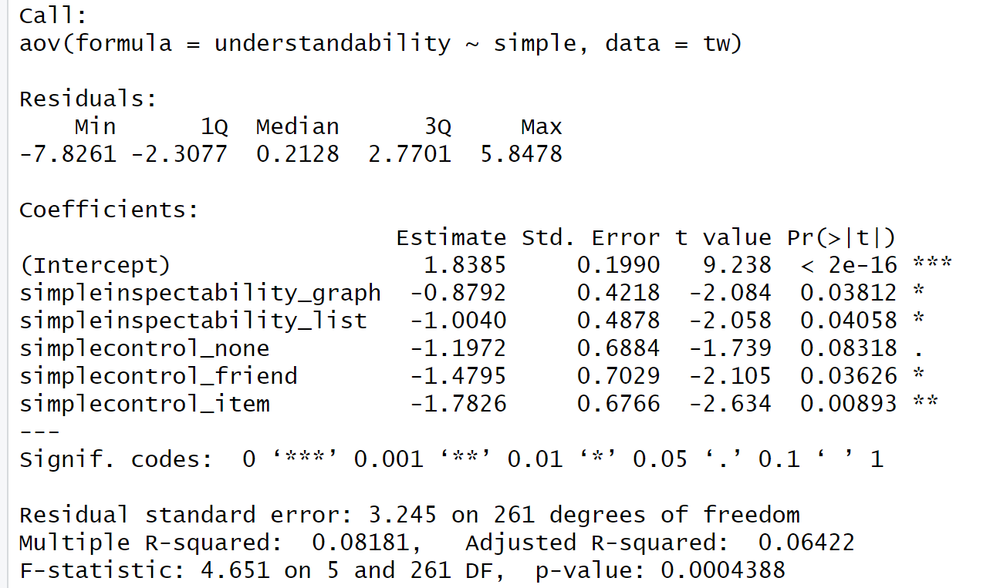
Saved figure or output 26 · original Homework 2 submission. Select the image to inspect it at full size.Inspectability
The estimate for the overall mean understandability when inspectability and control are constant is 1.84.
The contrast coefficients for inspectability in the graph view and inspectability in the list view represent the difference in understandability between graphview and listview at each level of control. They are both significant. simpleinspectability_graph: Estimate = -0.88 suggests that overall, the graphview is associated with lower understandability compared to listview across all levels of control. simpleinspectability_list: Estimate = -1.00, suggests that overall, the listview is associated with higher understandability compared to graphview across all levels of control.
Control
The contrasts for each level of control (none, friend, item) compare the differences in understandability between each level of control and the overall mean across all levels of inspectability.
simplecontrol_none: Estimate = -1.197 (p = .083) is not significant.
simplecontrol_friend: Estimate = -1.48 (p = .036) is significant.
simplecontrol_item: Estimate = -1.78 (p = .0089) is significant.
Overall, inspectability significantly affects understandability. Also, the effect of control on understandability is significant.
Input:
summary.lm(u2)
r_squared <- .08051
r <- sqrt(r_squared)
r
r = 0.284.
Input:
omega_aov <- function(u2){
MS<-summary(u2)[[1]]$'Mean Sq'; #get the mean squares
df<-summary(u2)[[1]]$Df; #get the Dfs
MSr<-MS[length(MS)]; #get MSr (the last one)
N<-sum(df)+1; #get N (sum of df+1)
MS<-MS[-c(length(MS))]; #remove MSr from MS
df<-df[-c(length(df))]; #remove dfr from df
var<-df*(MS-MSr)/N; #get the variances
varTotal<-sum(var)+MSr; #get the total variance
omega.squared<-var/varTotal; #get the omega-squareds
omega<-sqrt(omega.squared); #get the omegas
labels<-attr(u2$terms,"term.labels"); #get labels
return(cbind(labels,omega,omega.squared))
}
omega_aov(u2)
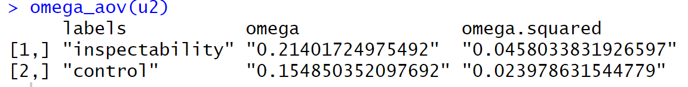
Saved figure or output 27 · original Homework 2 submission. Select the image to inspect it at full size.ωSquaredInspectability <- .0458
ωSquaredControl <- .02398
rInspectability <- sqrt(ωSquaredInspectability/(1 - ωSquaredInspectability))
rControl <- sqrt(ωSquaredControl/(1 - ωSquaredControl))
rInspectability
rControl
The effect size r of Inspectability is 0.219.
The effect size r of Control is 0.157.
desc <- by(tw$understandability, list(tw$inspectability,tw$control), stat.desc)
#mes(meanListview, meanGraphview, sdListview, sdGraphview, nListview, nGraphview)
mes(1.095317633, 2.581757467, 3.486709633, 2.985056867, 131, 136)
The mean difference effect size d is -0.46, indicating a moderate effect size.
There was a significant main effect of inspectability on understandability, F(1, 261) = 14.028, p < .001, j)ω2 = .214. Bonferroni post-hoc tests revealed that there was a sifgnificant difference in the understandability of participants when exposed to the graphview and listview conditions.
The main effect of control was also significant (p = 0.013, F(2,261) = 4.414), suggesting that there is a significant difference in understandability scores across different levels of control.
The interaction effect between inspectability and control was not significant (p = 0.832, F(2,261) = 0.184). Originally, there was a significant main effect of inspectability on understandability, but no significant interaction effect between inspectability and control, So I conducted robust post-hoc tests on the simple effects to test if the effect of inspectability on understandability is significant at every level of control. The robust tests revealed that the effect of inspectability and contol on understandability is significant.